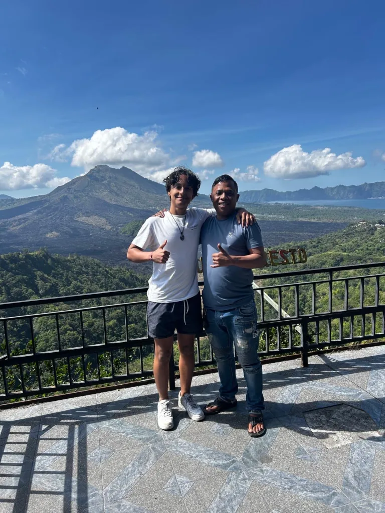
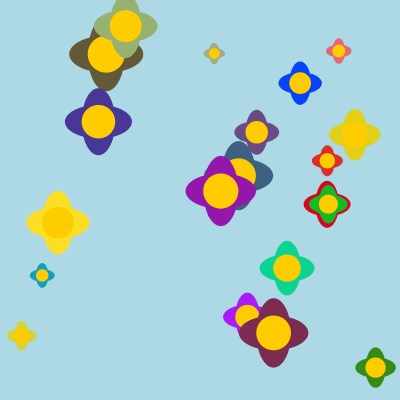
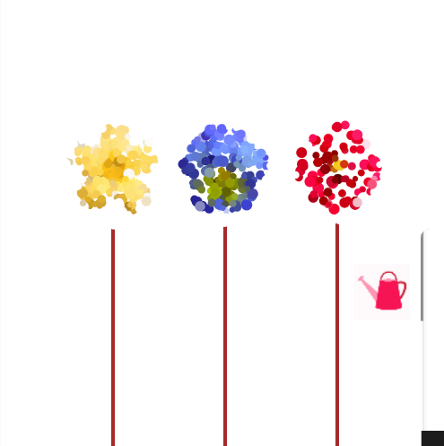
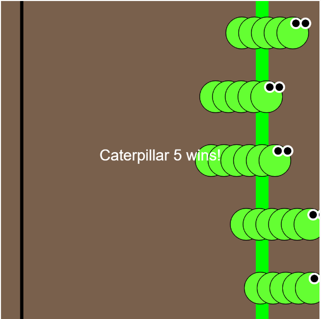
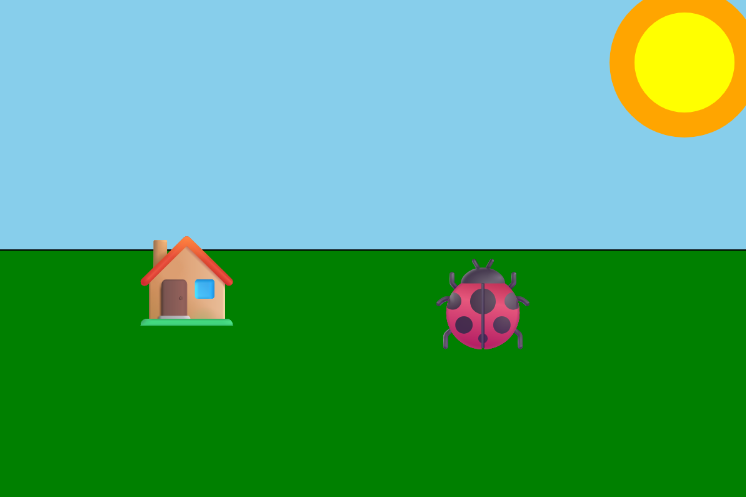

Over mij
Hoi, ik ben Noah. Ik studeer Software Developer en maak graag websites. Ik vind het leuk om nieuwe dingen te leren over programmeren en ze meteen uit te proberen.

Hoi, ik ben Noah. Ik studeer Software Developer en maak graag websites. Ik vind het leuk om nieuwe dingen te leren over programmeren en ze meteen uit te proberen.
In mijn vrije tijd game ik graag, spreek ik af met vrienden en slaap ik graag uit.
Ik maak websites met HTML, CSS en JavaScript en oefen ook met C#. In groepsopdrachten werk ik samen en help ik problemen oplossen.
Lesopdrachten

Opdracht 01
Klik in de tuin om een bloem in een willekeurige kleur te planten. De bloemen worden langzaam kleiner en verwelken.

Opdracht 02
De gieter volgt je muis. Houd de muisknop ingedrukt om de drie bloemen water te geven en te laten groeien.

Opdracht 03
Klik om vijf rupsen te laten racen. Ze bewegen op wisselende snelheden, dus je weet vooraf nooit wie wint.

Opdracht 04
Een p5.js-tekening van een grasveld met een huisje en een grote zon. Beweeg je muis om het lieveheersbeestje door de scène te sturen.